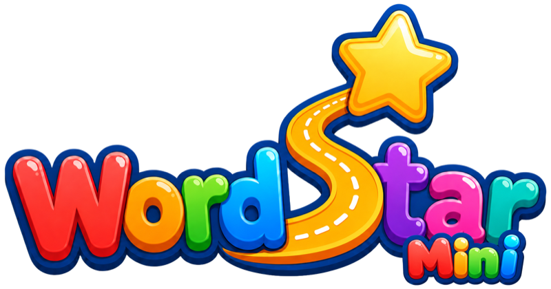

By Provident
About ten minutes, once. Steps 4 and 5 are optional but worth doing.
Two buttons on the right-hand edge do everything: Sun on top, Power below it - the same symbols are printed on the buttons. Drag the model to look around.
drag to rotate
Plug any USB-C cable into the port on the bottom edge. The little battery in the corner of the logo screen fills up as it charges. A full charge lasts many days of practice.
Press either button. You'll see the logo for a moment, then a large letter h, silently.
The device wakes straight into All Skills (step 8), the run of checks a specialist does with a child, starting with the letters.
To get to the spoken practice programme instead, hold Sun for two seconds to open the table from step 7, tap Sun or Power until it shows Full Progression, then hold Sun.
The programme picks up where your child left off - the first time, the letter s, spoken aloud. That's the practice screen.
1 / 52abc, Read, Find...)Once it knows your WiFi, the device quietly checks for improvements about twice a day and installs them itself - new sounds included. You never have to do this again.
WordStar Mini, password learnwords).http://192.168.4.1Pairing lets your child's practice recordings and progress appear in your WordStar dashboard.
From then on, practice syncs whenever the device is awake near a browser with your dashboard open.
↑ Back to topThe everyday routine - a few minutes together, as often as you like.
From the practice screen (Full Progression in the table, see step 3), the device shows a letter or letter group and says its sound. Then:
It remembers where you got to, so you can stop any time and carry on tomorrow. The programme runs through 124 sounds in the order children usually meet them - single letters first, then pairs like sh and ai, then the trickier spellings.
↑ Back to topFor grown-ups: moving around the programme, and short letter checks for a quick refresher or a test.
To move to a different activity, or a different part of the programme, hold Sun for two seconds.
A small table appears, one entry at a time, opening on the one you're in. It works the same from inside a check. In order, it lists:
Short runs, one item at a time, in the same order the school assessment uses.
The device wakes straight into All Skills: every test in one sitting. Each test ends on "All done!" naming the next; tap Sun to go on. The tests, in order:
Every test is also in the table on its own, and so are the practices, where the device says each item and listens to your child:
In a test the device stays silent and you do the asking - except Find and the Rhyming tests, where the device says the word because that is the question.
The corner of the screen says what to do: abc/ABC, Say, Read, Find, Sound, Rhyme?, Rhyme.
How to run one:
| What you see | What to do |
|---|---|
| Nothing happens when I press a button | Charge it for half an hour, then press again. A very flat battery needs a little charge before it will wake. |
| It's showing the logo | It's just asleep. Press either button. |
| It shows a big letter but says nothing | That's All Skills, the silent letter test it wakes into (step 8). Hold Sun, tap to Full Progression, hold Sun for the spoken practice programme. |
| A sound shows "(no audio yet)" | That sound hasn't reached the device yet. Do step 4 if you haven't - it downloads new sounds itself. Or in WiFi Mode, Home WiFi, tap Check for updates now. |
| New router or WiFi password | Repeat step 4 - the new network replaces the old one. |
| Passing the device on to another family | In WiFi Mode, Home WiFi, use Reset for a new family: it forgets your WiFi, clears progress and recordings, and keeps everything else. |